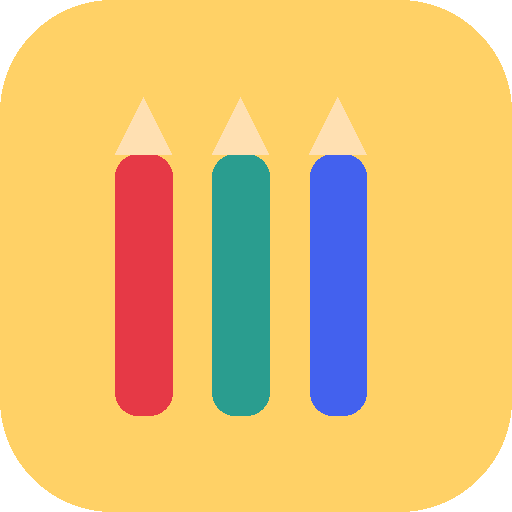

Rapid Prototyping Experiment
A free, offline, toddler-proof coloring app I designed, built, and shipped for my daughter — using my own kid as a live usability panel, and a handful of rapid build-test-learn cycles instead of a spec.

The Problem
My daughter goes through coloring pages the way most kids go through snacks — fast, and she wants more of her favorites. I wanted an iPad app that could keep up: something she could open independently, color freely, and where I could drop in whatever image or PDF I wanted her to color — a page from her own book, a photo of her cousin, a drawing she'd made that morning.
I couldn't find one. Every coloring app I tried was either locked to a fixed library of clip art, required an internet connection and an account, or wanted a subscription to unlock the one feature I actually needed. None of them were built to be handed to a toddler and left alone.
So the requirements weren't really a feature list — they were a set of constraints that had to be true at the same time.
The Constraints
The Approach
I built the first working version with Claude in an afternoon, treating it less like a spec-and-build project and more like a conversation: describe the constraint, get a working prototype, hand it to my daughter, watch what happened, and go again. There was no roadmap document — the roadmap was whatever broke during the next coloring session.
That loop mattered more than any individual feature. A two-year-old is an unforgiving usability panel: she doesn't rationalize a bad interaction or push through friction to be polite. If something didn't work, she'd abandon it in seconds, and I'd know exactly where to look.
The fastest way to find out what a product actually needs is to put it in front of someone who has zero patience for what it doesn't.
Two Things Testing Surfaced
Early on, she'd rest part of her off hand against the screen while coloring — a completely natural way for a toddler to steady herself. But that stray contact was registering as touch input, which meant her strokes went haywire or her color and tool selections got hijacked mid-stroke. This wasn't something I could have anticipated from a desk; it only showed up by watching her actually color. I reworked the touch handling so the app could tell the difference between an incidental resting hand and an intentional coloring stroke, which made the whole experience click for her — she could finally color cleanly and switch tools without a fight.
The first version could only hold a handful of images at a time — plenty, I assumed, for a coloring app. She proved that assumption wrong within a day, blowing through every page I'd loaded and asking for more. I rebuilt the underlying file system to support a much larger library, so I could keep adding new pages — new pictures, new PDFs, new coloring books — without running into a ceiling. What looked like a storage bug was really a signal that the app had found real, repeat engagement.
Where It Landed
Lucy Colors now lives on our iPad as a genuinely useful tool — a clean, creative way to hold my daughter's attention for a focused stretch when I need one, without a screen full of ads, accounts, or content I didn't choose. It does exactly the narrow job it was built for, because that job was defined by testing, not assumption.
It's also given me an unexpected front-row seat to something bigger: watching her learn how to interact with a digital interface at all — what's tappable, what a "tool" is, how cause and effect works on a screen. That's started shaping an idea for a next project, focused more directly on digital readiness and early computer literacy for toddlers. For now, though, this one stays focused on what it does well: crayons, without the chaos.
Open it on an iPad for the full experience — upload your own image or PDF and see it in action.